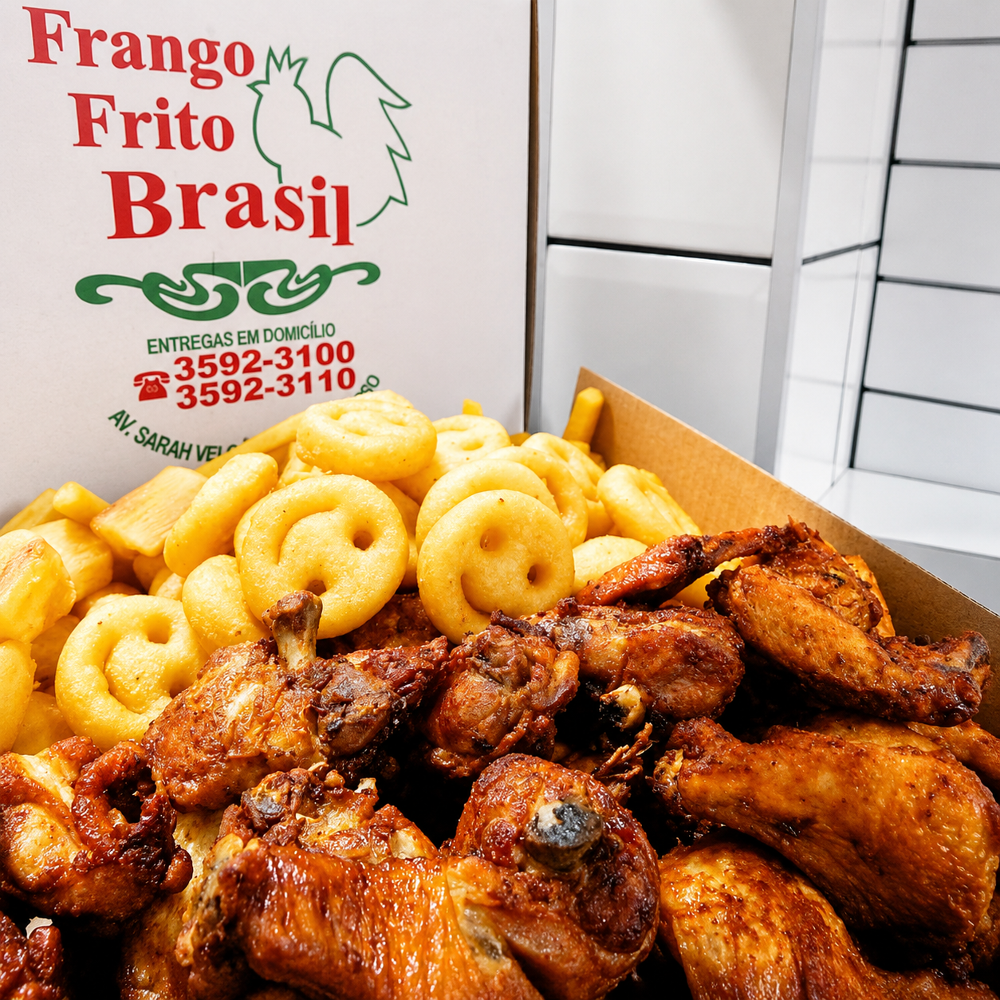
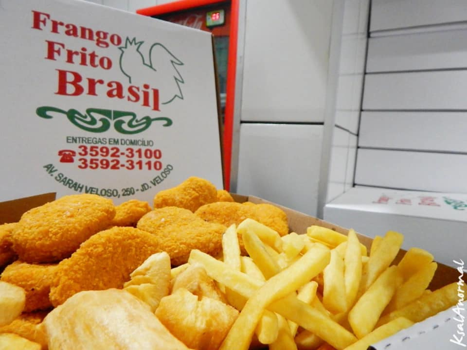

🍗
Cuidado com o pedido
Entrega pensada para preservar embalagem, temperatura e experiência do cliente final.
Entrega quente, organizada e sem improviso
Walbert, esta proposta organiza a cobertura de motoboys do Frango Frito Brasil com agenda digital, suporte humano, fechamento claro e parceiros por turno. Como o volume durante a semana é variável, o modelo entra como base inicial de validação, sem cravar escala definitiva além do informado.


A dor que a proposta resolve
O cliente que pede frango frito espera comida quente, crocante e bem entregue. Quando a operação depende de improviso, o restaurante corre risco de atraso, pedido acumulado, perda de qualidade e pressão no atendimento.
Entrega pensada para preservar embalagem, temperatura e experiência do cliente final.
Parceiros organizados por turno para reduzir improviso nos períodos combinados.
Canal de apoio para alinhar operação, ocorrências, atrasos, ajustes e dúvidas.
Como a Osasco Express entra
O Frango Frito Brasil segue cuidando do preparo e da qualidade do produto. A Osasco Express entra para organizar a parte da entrega: agenda digital dos parceiros, suporte humano, acompanhamento, fechamento e ajuste de cobertura conforme o comportamento real da operação.
Organização dos parceiros por dia e horário, com visão clara da cobertura prevista.
Como a semana é variável, a cobertura pode ser ajustada com leitura dos primeiros ciclos.
Diárias, taxas por km e plano de gestão separados para facilitar conferência.
Apoio operacional para reduzir improviso e melhorar previsibilidade nos dias fortes.
Modelo inicial recomendado
A base informada é simples e direta: 1 parceiro de segunda a quinta e 2 parceiros de sexta a domingo. Como a média do fim de semana é de aproximadamente 40 pedidos e a semana é variável, o modelo deve ser acompanhado nos primeiros ciclos antes de qualquer aumento de cobertura.
Modelo inicial para dias de volume variável, evitando custo fixo acima da necessidade real.
Indicado para os dias com maior chance de demanda e média informada de fim de semana.
Cobertura inicial para sustentar pedidos do fim de semana, com ajuste se houver pico.
Planos de gestão logística
Como o volume informado ainda não aponta necessidade de plano maior, o Plano Básico funciona como referência inicial para organizar a operação com clareza.
Até 800 entregas mensais. Referência inicial para o Frango Frito Brasil começar com agenda, suporte e fechamento organizado.
Até 1.300 entregas mensais, com maior rotina de acompanhamento operacional.
Até 1.800 entregas mensais, para operações com volume mais constante.
Para operações com maior volume ou necessidade de acompanhamento mais próximo.
Valores e apuração
A diária cobre a presença do parceiro no turno. A taxa por km varia conforme cada entrega realizada. O plano cobre a gestão logística da Osasco Express: agenda digital, suporte humano, acompanhamento e fechamento.
Por parceiro em diária de seis horas.
Por parceiro nos dias de maior movimento.
Segue o km de cada entrega realizada, até 10 km em rota.
Não inclui plano de gestão nem taxas variáveis por km
Da validação ao início
Como ainda faltam dados formais para contrato, esta proposta conduz primeiro para validação com o Walbert. Depois disso, ajustamos dados, condições finais e formalização.
Walbert confirma horários, volume, raio de entrega e canais de venda.
Osasco Express ajusta cobertura, plano, diárias e modelo de início.
Organização dos parceiros, agenda digital, suporte e acompanhamento inicial.
Próximo passo
A proposta já deixa claros os valores de diária, km, plano e modelo inicial. O próximo passo é validar horários, raio e comportamento real dos pedidos para começar sem excesso e sem improviso.
Validar pelo WhatsApp